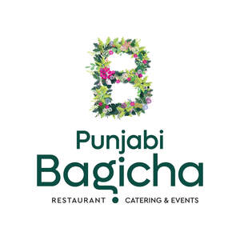

Trade Mark Journal No.2025/026 27 June 2025
UK00004214529 5 June 2025 (43)

Punjabi Bagicha
- Class 43
- Fast-food restaurant services; Hotel restaurant services; Take-out restaurant services; Restaurant and bar services; Bar and restaurant services; Take-away restaurant services; Carvery restaurant services; Restaurant services; Salad bars [restaurant services]; Restaurant reservation services; Restaurants; Carry-out restaurants; Self-service restaurant services; Grill restaurants; Mobile restaurant services; Reservation of restaurants; Booking of restaurant seats; Serving food and drink for guests in restaurants; Catering in fast-food cafeterias; Serving food and drink in restaurants and bars; Restaurants (Self-service -); Self-service restaurants; Restaurant services for the provision of fast food; Tourist restaurants; Restaurant services incorporating licensed bar facilities; Fast food restaurants; Providing food and drink for guests in restaurants; Provision of food and drink in restaurants; Providing restaurant services; Eateries; Restaurant information services; Providing food and drink in restaurants and bars; Restaurant services provided by hotels; Catering of food and drinks; Food and drink catering for banquets; Catering (Food and drink -); Food and drink catering; Catering of food and drink; Serving food and drink in doughnut shops; Brasserie services; Reservation and booking services for restaurants and meals; Cafe services; Hotel catering services; Food and drink catering for institutions; Agency services for reservation of restaurants; Providing food and drink in bistros; Serving food and drink in Internet cafes; Hotel reservations; Takeaway food and drink services; Take-away food and drink services; Food and drink catering for cocktail parties; Cocktail lounge buffets; Takeaway food services; Take-away food services; Serving food and drink for guests; Resort hotel services; Making reservations and bookings for restaurants and meals; Catering services for company cafeterias; Providing food and drink in doughnut shops; Serving food and drinks; Catering for the provision of food and drink; Café services; Reservation of hotel accommodation; Hotel reservation services; Take-away fast food services; Hospitality services [food and drink]; Providing reviews of restaurants and bars; Wine bar services; Hotel services; Providing hotel and motel services; Hotel accommodation reservation services; Providing food and drink catering services for exhibition facilities; Guesthouse; Corporate hospitality (provision of food and drink); Providing room reservation and hotel reservation services; Providing food and drink in Internet cafes; Catering services for providing European-style cuisine; Catering for the provision of food and beverages; Beer bar services; Snack bar services; Consultancy services in the field of food and drink catering; Tapas bars; Catering services for the provision of food and drink; Providing reviews of restaurants; Club services for the provision of food and drink; Rental of dishes; Providing food and drink catering services for convention facilities; Night club services [provision of food]; Coffee bar services; Providing food and drink for guests; Private members dining club services; Catering; Providing food and drink catering services for fair and exhibition facilities; Self-service cafeteria services; Cafeteria services; Catering services; Mobile catering; Business catering services; Catering services for hospitality suites; Outside catering; Mobile catering services; Outside catering services; Catering services for schools; Catering services for educational establishments; Rental of catering equipment; Catering services for hospitals; Catering services for the provision of food; Catering services specialising in cutting ham for weddings and private events; Catering services specialised in cutting ham by hand, for weddings and private events; Catering services for conference centers; Charitable services, namely providing food and drink catering; Organisation of catering for birthday parties; Office catering services for the provision of coffee; Catering services specialising in cutting ham for fairs, tastings and public events; Catering services for retirement homes; Catering services specialised in cutting ham by hand, for fairs, tastings and public events; Catering services for nursing homes; Banqueting services; Hospitality services [accommodation]; Providing banquet and social function facilities for special occasions; Services for providing food; Bartending services; Personal chef services; Arranging of wedding receptions [food and drink]; Charitable services, namely providing temporary accommodation; Food preparation services; Snack-bar services; Arranging of wedding receptions [venues]; Services for providing food and drink; Bar services; Bars; Rental of bar equipment; Wine bars; Juice bars; Bar information services; Cocktail lounges; Cocktail lounge services; Lounge services (Cocktail -).
Chopra Catering Limited